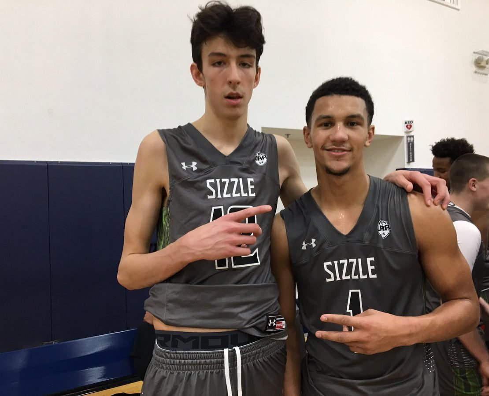

Twelve 5-star rated players have committed to Gonzaga, as rated in the final ranking projections by at least one major college basketball recruiting service (247Sports.com, ESPN.com, Rivals.com, and Scout.com). Among these players, five began their college careers with the Bulldogs: Austin Daye, Domantas Sabonis, Zach Collins, Oumar Ballo, and Jalen Suggs. Three others, Nolan Hickman, Chet Holmgren, and Hunter Sallis, are expected to make their Gonzaga debuts in 2021–22. Only Ballo did not make his debut immediately after his arrival at Gonzaga; he was to have debuted in the 2019–20 season, but was not academically cleared to play by the NCAA and was redshirted that season.